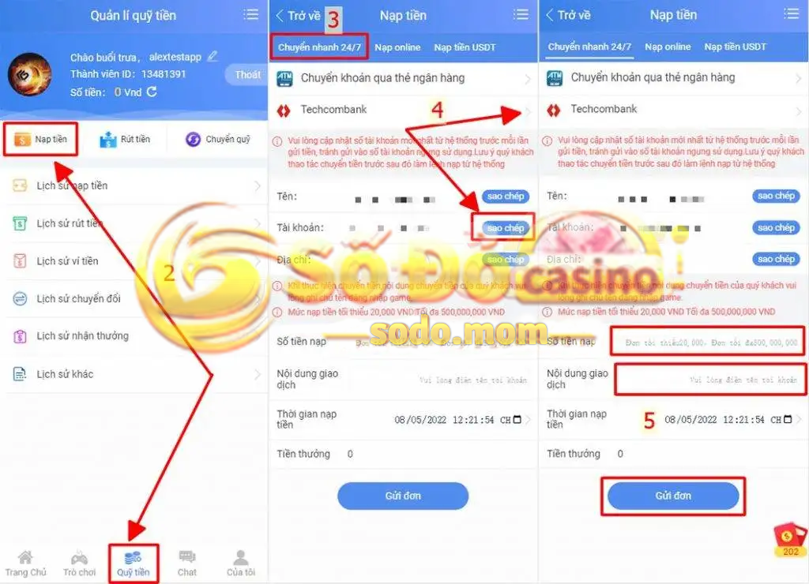
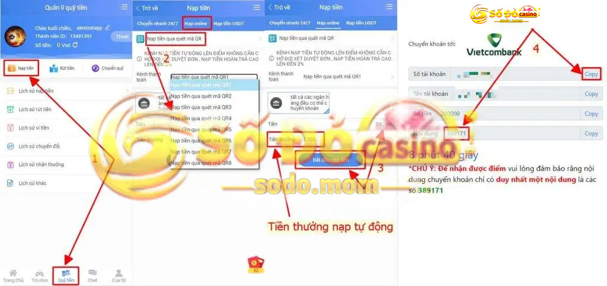
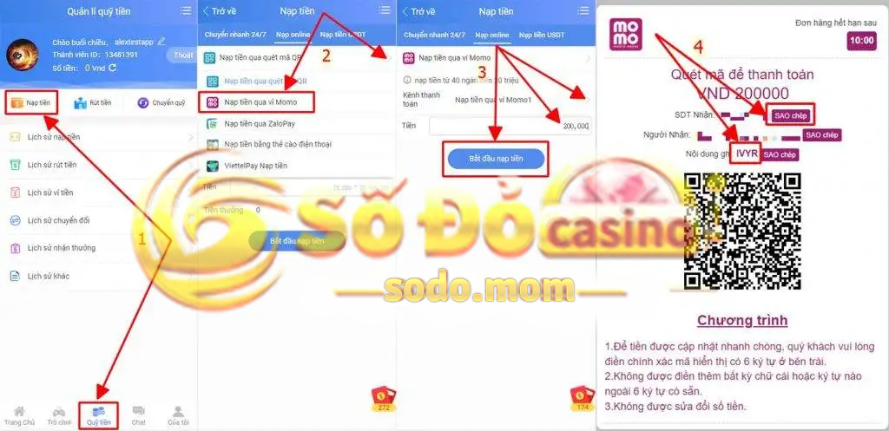
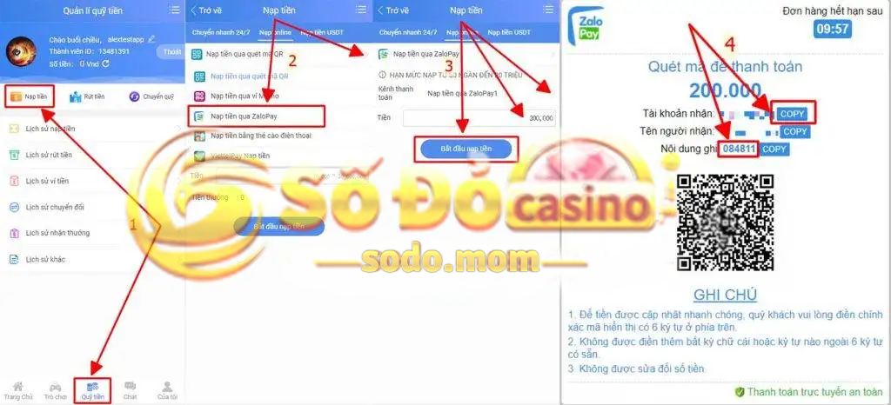
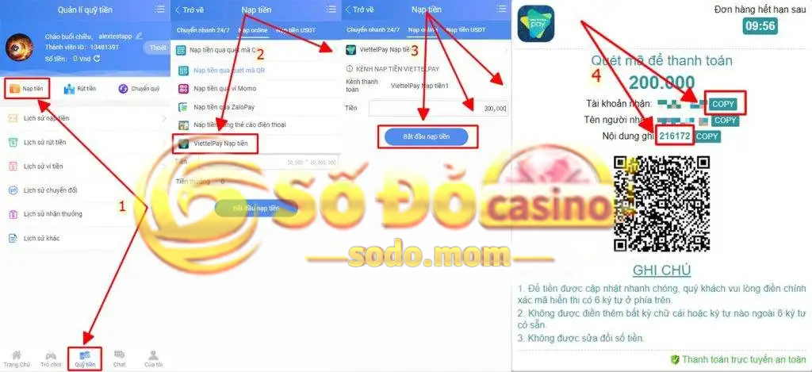
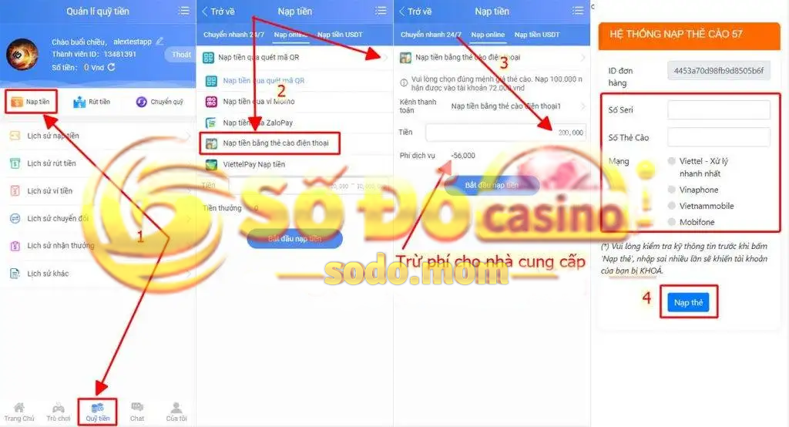
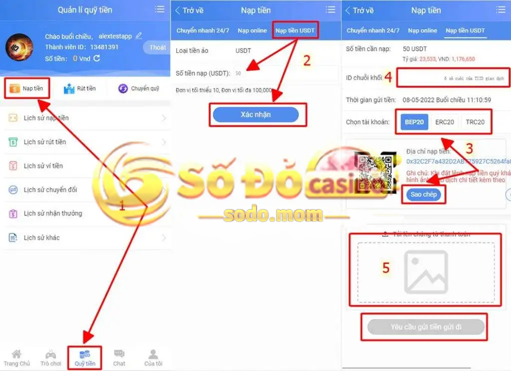

Hướng dẫn Nạp tiền sodo dành cho những thành viên đăng ký thành công tài khoản nhà cái SODO. Bật mí kinh nghiệm nạp tiền và lên điểm trong vòng một nốt nhạc không cần liên hệ chăm sóc khách hàng hỗ trợ ngay trong bài viết bên dưới.
Một số lưu ý bạn cần biết trước khi tiến hành nạp tiền SODO
✅ Quy ước nạp tiền tính điểm của nhà cái Số Đỏ không giống với những website cá cược quen thuộc như … Số tiền tại ví chính trên tài khoản SODO sẽ thể hiện đúng với số tiền mà bạn nạp vào. Do vậy sẽ tránh được tình trạng nhầm lẫn của người chơi khi nạp tiền.
| Quy ước thể hiện điểm tại SODO |
Quy ước điểm số tại các nhà cái khác |
| 100.000 VNĐ = 100.000 |
100.000 VNĐ = 100 điểm |
| 1.000.000 VNĐ = 1.000.000 |
1.000.000 VNĐ = 1.000 điểm |
✅ Ví tiền của người chơi sẽ được chia ra làm 2 loại với thuật ngữ:
Ví chính: thể hiện tổng tiền trong tài khoản của người chơi.
Ví sảnh: thể hiện tiền của người chơi trong từng sảnh cược.
Để tham gia các thể loại cá cược ở 1 sảnh trò chơi nhất định, người chơi cần thực hiện luân chuyển tiền từ ví chính đến ví sảnh được chọn bằng cách “chuyển quỹ”. Các bước chuyển quỹ sẽ được chúng tôi hướng dẫn ngay mục “hướng dẫn chuyển quỹ” bên dưới.
✅ SODO cung cấp đa dạng các kênh nạp tiền phổ biến hiện nay:
Kênh chuyển nhanh 24/7: hỗ trợ tất cả các ngân hàng hiện có tại Việt Nam như VCB, Techcombank, ACB, BIDV, MBbank, Eximbank … thậm chí là Agribank (ngân hàng thuộc vốn sở hữu nhà nước).
Kênh nạp tiền online: bao gồm các phương thức chuyển khoản như quét mã QR, nạp tiền qua ví Momo, Zalo pay, Viettel pay và mới bổ sung phương thức nạp tiền bằng thẻ cào điện thoại.
Kệnh nạp tiền USDT: nạp tiền thông quá tiền điện tử USDT trong ví binance.
✅ Người chơi cần chuẩn bị một tài khoản ngân hàng chính chủ đã cài đặt các ứng dụng internet banking và mobile banking, liên kết với ví điện tử Momo/Zalo Pay/Viettelpay, thậm chí ví binance nếu bạn thực hiện chuyển khoản bằng USDT.
Chúng tôi sẽ hướng dẫn bạn thao tác thực hiện nạp tiền tại từng kênh hiện hữu tại nhà cái Số Đỏ qua giao diện điện thoại. Những thao tác này sẽ tương tự nếu bạn thao tác trên giao diện máy tính.
Hướng dẫn nạp tiền SODO qua chuyển khoản ngân hàng (chuyển nhanh 24/7)
Phương thức chuyển khoản nhanh qua ngân hàng được đa số người chơi sử dụng và ưa chuộng bởi tính nhanh chóng, kịp thời. Tuy nhiên, để nạp tiền có điểm ngay lập tức thì bạn hãy làm theo những bước hướng dẫn nạp tiền bên dưới:
Bước 1: Đăng nhập tài khoản vào trang chủ SODO
Bước 2: Vào mục “Quỹ tiền” và chọn “Nạp tiền”
Bước 3: Một giao cửa sổ sẽ mở ra với giao diện mặc định là nội dung “chuyển nhanh 24/7” và “chuyển khoản qua thẻ ngân hàng”
Bước 4: Chọn ngân hàng bạn muốn thực hiện chuyển khoản, sao chép số tài khoản của SODO và vào app banking để chuyển khoản.
Bước 5: Sau khi chuyển khoản thành công, bạn trở lại giao diện nạp tiền, lên điểm bằng cách điền các thông tin: số tiền nạp, nội dung giao dịch và bấm gửi đơn.

Lưu ý khi nạp tiền bằng chuyển khoản ngân hàng
Số tài khoản từ hệ thống nhà cái Số Đỏ luôn luôn thay đổi. Do đó, mỗi lần nạp tiền thì cập nhật số tài khoản mới nhất để tránh gửi số tài khoản đã ngừng sử dụng và dẫn đến mất tiền.
Cần thực hiện chuyển khoản ở bước 4 trước khi thực hiện lệnh lên điểm ở bước 5.
Nội dung chuyển khoản trong app ngân hàng giống với nội dung giao dịch lúc làm lệnh: tên đăng nhập của bạn.
SODO duyệt lệnh nạp tiền của bạn ngay sau khi nhận được tiền chuyển khoản.
Luôn luôn lựa chọn “chuyển khoản nhanh” hoặc ” chuyển khoản 24/7″ trong app ngân hàng. Một số ngân hàng sẽ mặc định chuyển khoản 24/7 khi chuyển khoản nhưng một số ngân hàng yêu cầu khách lựa chọn như Vietcombank. Agribank, BIDV. Do đó, người chơi nào sở hữu những app trên thì lưu ý để tránh thời gian chờ đợi lên điểm.
Nhà cái tự động cập nhật khuyến mãi hoàn nạp ngay khi nạp tiền SODO thành công. Tỷ lệ hoàn trả từ 0.5% đến 2.0% và yêu cầu hoàn thành 1 vòng cược để rút tiền về tài khoản.
Hướng dẫn nạp tiền SODO qua kênh nạp online
Đối với kênh nạp tiền online hay nạp tiền trực tuyến sẽ có những yêu cầu làm lệnh khác nhau tùy thuộc vào mỗi phương thức. Dưới đây là những hướng dẫn nạp tiền SODO cụ thể từng phương thức và mẹo để có điểm nhanh trong ví chính của nhà cái.
Nạp tiền SODO qua quét mã QR
Nạp tiền qua quét mã QR thực chất cũng giống như nạp tiền qua chuyển nhanh 24/7 ở trên. Tuy nhiên, phương thức này sẽ khác ở chỗ bạn không cần làm lệnh lên điểm. Cụ thể như sau:
Bước 1: Vào mục “Quỹ tiền” và chọn “Nạp tiền”
Bước 2: Chọn mục “Nạp Online” sẽ xuất hiện giao diện mặc định “Nạp tiền qua quét mã QR”. Bạn lựa chọn 1 kênh thanh toán quét mã QR1 đến QR8
Bước 3: Điền số tiền cần nạp và nhấp chọn “Bắt đầu nạp tiền”
Bước 4: Một cửa số mới được mở ra với tài khoản. Sao chép số tài khoản nhận và nội dung, bạn tiến hành chuyển khoản trong ứng dụng ngân hàng.

Lưu ý khi thực hiện nạp tiền qua quét mã QR
Mỗi kênh thanh toán quét mã QR1 đến QR8 sẽ quy định những ngân hàng được nhận. Do đó, bạn kiểm tra tên ngân hàng trước khi tiến hành chuyển tiền.
Phần nội dung chuyển khoản không còn là tên đăng nhập của bạn mà là những con số mặc định hiện trên giao diện thông tin số tài khoản nhận. Nội dung sẽ thay đổi nếu hết thời gian chờ chuyển khoản (10 phút) hoặc bạn thoát giao diện ra ngoài.
Sau khi chuyển khoản thành công, bạn không cần làm lệnh lên điểm như kênh chuyển khoản nạp nhanh 24/7. Do đó, tránh tình trạng gặp vấn đề trong lúc lưu chuyển tiền giữ 2 tài khoản thì bạn chụp và lưu màn hình chuyển khoản thành công có phần nội dung chuyển khoản.
SODO tự động cập nhật khuyến mãi hoàn nạp lên đến 2% mỗi lần nạp tiền và lên điểm thành công.
Nạp tiền tài khoản SODO qua ví Momo
Ví điện tử Momo được sử dụng nhiều đối với người chơi tại Việt Nam. Tạo sự thuận tiện cho các thành viên SODO, nhà cái đã phát triển kênh nạp tiền online qua ví Momo theo các bước thao tác sau:
Bước 1: Vào mục “Quỹ tiền” và chọn “Nạp tiền”
Bước 2: Chọn mục “Nạp Online” và lựa chọn “nạp tiền qua ví momo” tại mũi tên trong phần “Nạp tiền qua quét mã QR”
Bước 3: Chọn 1 trong 3 kênh thanh toán Momo1 đến Momo3. Điền số tiền cần nạp và nhấp chọn “Bắt đầu nạp tiền”
Bước 4: Một cửa sổ thông tin xuất hiện. Sao chép SDT nhận và nội dung ghi rồi bạn vào app Momo tiến hành chuyển khoản.

Nạp tiền SODO qua Zalopay
Các bước thực hiện nạp tiền tài khoản SODO qua ví Zalopay tương tự như Momo. Dưới dây là hướng dẫn bằng hình ảnh để bạn dễ dàng thực hiện nạp tiền.

Lưu ý khi nạp tiền online qua ví điện tử Zalopay
Thời gian chờ chuyển khoản là 10 phút và tự động thay đổi sau khi hết giờ. Do đó, khi tiến hành chuyển khoản không nên thoát hẵn giao diện thông tin và điền đúng nội dung ghi trong phần nội dung chuyển trong ứng dụng Zalopay.
Sau khi chuyển khoản thành công, bạn không cần làm lệnh lên điểm như kênh chuyển khoản nạp nhanh 24/7. Do đó, tránh tình trạng gặp vấn đề trong lúc lưu chuyển tiền giữ 2 tài khoản thì bạn chụp và lưu màn hình chuyển khoản thành công có phần nội dung chuyển khoản.
SODO không áp dụng tặng thưởng nạp tiền cho kênh nạp tiền online qua ví điện tử Zalopay.
Nạp tiền SODO qua ví điện tử Viettelpay
Tương tự với nạp tiền qua ví Momo và Zalopay, các thao tác thực hiện nạp tiền sẽ được thể hiện theo hình ảnh bên dưới. SODO cung cấp đa dạng các phương thức thanh toán qua hầu hết các ví điện tử phổ biến, bạn có thể lựa chọn phức thức phù hợp với mình.

Lưu ý khi nạp tiền online qua ví điện tử Viettelpay
Thời gian chờ chuyển khoản là 10 phút và tự động thay đổi sau khi hết giờ. Do đó, khi tiến hành chuyển khoản không nên thoát hẵn giao diện thông tin và điền đúng nội dung ghi trong phần nội dung chuyển trong ứng dụng Viettelpay.
Sau khi chuyển khoản thành công, bạn không cần làm lệnh lên điểm như kênh chuyển khoản nạp nhanh 24/7. Do đó, tránh tình trạng gặp vấn đề trong lúc lưu chuyển tiền giữ 2 tài khoản thì bạn chụp và lưu màn hình chuyển khoản thành công có phần nội dung chuyển khoản.
SODO không áp dụng tặng thưởng nạp tiền cho kênh nạp tiền online qua ví điện tử Viettelpay.
Nạp tiền SODO qua thẻ cào điện thoại
Phương thức nạp tiền SODO qua thẻ cào điện thoại mới được cập nhật từ đầu năm 2022 nhằm hỗ trợ cho những người chơi muốn chuyển đổi tiền điện thoại thành điểm cược tại nhà cái Số Đỏ.
Lưu ý với các bạn phương thức bắt buộc áp dụng phí cao (28%) vận hành cho nhà cung cấp (không phải SODO) để chuyển đổi cho người chơi. Do đó, chúng tôi không khuyến khích các thành viên sử dụng phương thức nạp tiền qua thẻ cào điện thoại.

Các bước nạp tiền qua thẻ cào điện thoại như sau:
Bước 1: Vào mục “Quỹ tiền” và chọn “Nạp tiền”
Bước 2: Chọn mục “Nạp Online” và lựa chọn “Nạp tiền bằng thẻ cào điện thoại” tại mũi tên trong phần “Nạp tiền qua quét mã QR”
Bước 3: Nhập số tiền cần nạp và bấm chọn “Bắt đầu nạp tiền”
Bước 4: Một cửa số thông tin xuất hiện. Bạn điền số seri, số thẻ cào và chọn mạng điện thoại muốn nạp và bấm chọn nạp thẻ.
Hướng dẫn nạp tiền tài khoản SODO qua tiền điện tử USDT
USDT là thể loại tiền điện tử mới và phát triển hiện nay. Giống với đồng Bitcoin, USDT là loại tiền ảo có giá trị mua bán trao đổi ra tiền thật. Hiện nay, việc giao dịch bằng USDT đã được phổ biến trong thế giới cá cược online bởi tính an toàn, hợp pháp và được công nhận tại Việt Nam. Đồng USDT sẽ được bán hoặc mua theo tỷ giá đồng Đô la Mỹ.

Các bước nạp tiền SODO bằng tiền USDT được thực hiện như sau:
Bước 1: Vào mục “Quỹ tiền” và chọn “Nạp tiền”
Bước 2: Chọn mục nạp tiền USDT. Nhập số tiền cần nạp. Lưu ý: đồng tiền được tính là USD (đô la mỹ) và bấm chọn xác nhận
Bước 3: Một giao diện mới mở ra. Bạn chọn tài khoản chuyển và sao chép địa chỉ nạp tiền. Chuyển sang ứng dụng Binance để chuyển khoản và chụp ảnh thành công.
Bước 4: Sau khi chuyển khoản thành công, bạn quay lại giao diện SODO, điền ID chuỗi khối chính là 6 số cuối mã giao dịch
Bước 5: Tải hình ảnh chuyển khoản thành công và bấm chọn “yêu cầu gửi tiền gửi đi” để hoàn tất nạp tiền.
KẾT LUẬN
Trên đây là hướng dẫn nạp tiền SODO thông qua các kênh nhà cái cung cấp. Việc của bạn là chọn một kênh nạp tiền thích hợp và tiến hành theo các trình tự chúng tôi đã liệt kê ở trên. Cánh cửa đặt cược tại nhà cái SODO đã được chúng tôi giúp bạn mở ra, chúc bạn tham gia vui vẻ và gặt hái được nhiều thành công.
THAM GIA SODO – HOÀN TRẢ MỖI NGÀY KHÔNG GIỚI HẠN
✅ Xem thêm : 👉 Hướng dẫn rút tiền tại nhà cái SODO tại đây.